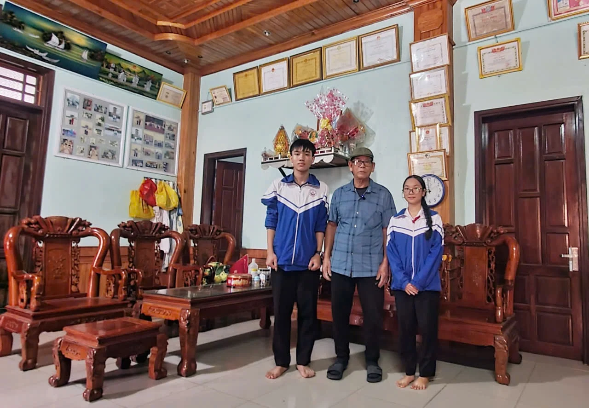

CỬA VIỆT, QUẢNG TRỊ
Chạm Cửa Việt
Chạm địa điểm – lắng nghe ký ức – hiểu thêm về Cửa Việt
Có những câu chuyện chỉ chờ bạn lắng nghe.
Cùng khám phá lịch sử, con người và nhịp sống
Cửa Việt — qua từng điểm chạm.
Bản đồ ký ức Cửa Việt
Chọn chủ đề hoặc một điểm chạm để mở câu chuyện.
Những điều chờ bạn khám phá.
Hiển thị 5 điểm chạm
Chưa tìm thấy điểm chạm
Thử một từ khóa khác hoặc xem lại tất cả điểm chạm.
Người có chuyện.
LẮNG NGHE CỬA VIỆT
Ký ức không chỉ
nằm trong trang sách.
Đó còn là nhịp thuyền về bến, một buổi chợ sớm và những câu chuyện được truyền từ thế hệ này sang thế hệ khác.
Hãy bắt đầu bằng một phút lắng nghe. Rồi tự hỏi: điều gì khiến bạn muốn tìm hiểu thêm về miền biển này?
Hình ảnh về nhịp sống Cửa Việt ở Chạm 04.
Cửa Việt qua những góc nhìn
Chọn ảnh để xem lớn và đọc chú thích.
GÓC SÁNG TẠO · CHẠM 05
Kể Cửa Việt
bằng cách của bạn.
Một tấm bưu thiếp, một bài viết, một câu chuyện nhỏ.
Chọn điều khiến bạn nhớ và bắt đầu kể.
GÓC CHIA SẺ · CỘNG ĐỒNG CHẠM CỬA VIỆT
Gửi một lời.
Giữ một ký ức.
Viết điều bạn yêu mến, một câu chuyện đáng nhớ hay lời nhắn gửi đến quê hương Cửa Việt. Mỗi chia sẻ đều trở thành một phần trong bức tranh ký ức chung.
Những ký ức được chia sẻ
Đang tải lời nhắn…TỪ NGHIÊN CỨU ĐẾN TRẢI NGHIỆM
Hiểu để yêu.
Chạm để nhớ.
CHẠM CỬA VIỆT là không gian học tập lịch sử và văn hóa địa phương, được phát triển theo định hướng của đề tài “Ký ức Cửa Việt trong mắt thế hệ trẻ”.
Giáo dục di sản · Học qua trải nghiệm
Trải nghiệm này dành cho ai?+
Học sinh, giáo viên và những người muốn tìm hiểu Cửa Việt. Học sinh có thể tự khám phá hoặc cùng giáo viên sử dụng các điểm chạm trong giờ học và hoạt động nhóm.
Tôi bắt đầu như thế nào?+
Chọn một trong 5 điểm trên sơ đồ. Mỗi chạm có 8 bước: định vị, thử đoán, xem ảnh, lắng nghe, khám phá, kiểm tra, viết ký ức và chọn đường đi tiếp. Hoàn thành các câu hỏi ghi nhớ để nhận dấu hộ chiếu.
Hành trình gồm những gì?+
Năm điểm chạm giới thiệu cửa biển, lịch sử, người kể chuyện, làng biển và góc nhìn người trẻ.
Nguồn tư liệu và hình ảnh+
Nội dung được biên soạn theo định hướng giáo dục di sản, kết hợp tìm hiểu lịch sử, văn hóa và đời sống Cửa Việt. Hình ảnh tham khảo từ các nguồn đã dẫn, gồm Báo Nông nghiệp và Môi trường, XANH EWEC, VOV và Báo Đầu tư; ảnh ngày nay không được giới thiệu như ảnh lịch sử.
Cảm nhận của tôi có được công khai không?+
Ở Bước 7, biểu mẫu chia sẻ được hiển thị trực tiếp. Cảm nhận chỉ xuất hiện công khai khi bạn tích đồng ý và gửi bài, với tên hiển thị tự chọn hoặc dưới tên ẩn danh. Hãy bỏ thông tin nhận diện trong nội dung.